開卷有益 ／
國中教育會考 ／ 數學 ／ 112 年112 年國中教育會考數學試題與答案
這一頁是民國 112 年國中教育會考數學的整份歷屆試題，共 27 題，題目與標準答案出自心測中心 會考歷屆試題（依著作權法 §9，考試試題不受著作權保護），其中 27 題附有詳解。以下逐題列出題幹、選項與答案；要計時作答或記錄成績，請用線上練習。
線上作答這一科 →
全部 27 題
第 1 題
\((-3)^3\) 之值為何？
（A） \(-27\)（B） \(-9\)（C） \(9\)（D） \(27\)答案：（A）
詳解與考點 正解：負數的三次方要把 -3 連乘 3 次。(-3)³=(-3)×(-3)×(-3)=9×(-3)=-27，所以 A 為正解。
B：-9 是只算了 (-3)×(-3) 的量，少乘 1 個 -3，錯誤。
C：9 是算到兩個負數相乘即停止，錯誤。
D：27 漏掉奇次方保留負號的結果，錯誤。
本題考點：整數次方——a³=a×a×a；負數的奇次方為負，負數的偶次方為正。
第 2 題
下列何者為多項式 \( x^2 - 36 \) 的因式？
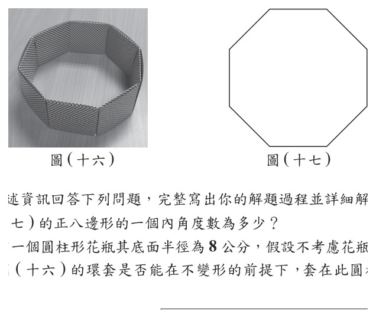
（A） \( x - 3 \)（B） \( x - 4 \)（C） \( x - 6 \)（D） \( x - 9 \)答案：（C）
詳解與考點 正解：題幹為平方差，先把 36 寫成 6²。x²-36=x²-6²=(x+6)(x-6)，所以 x-6 是因式，C 為正解。
A：x-3 對應的平方數是 3²，不是 36，錯誤。
B：x-4 對應的平方數是 4²，不是 36，錯誤。
D：x-9 對應的平方數是 9²，不是 36，錯誤。
本題考點：平方差公式——a²-b²=(a+b)(a-b)；先辨識 36=6²，再寫出兩個一次因式。
第 3 題
圖（一）的立體圖形由相同大小的正方體積木堆疊而成。判斷拿走圖（一）的哪一個積木後，此圖形前視圖的形狀會改變？
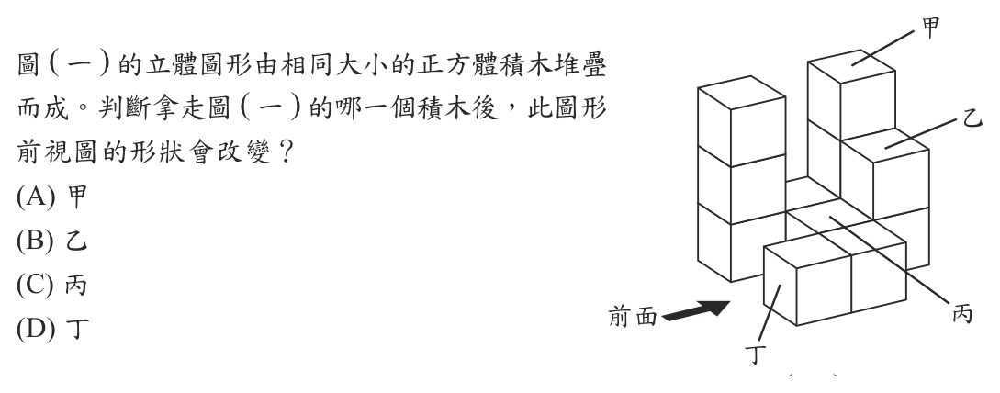
（A） 甲（B） 乙（C） 丙（D） 丁答案：（B）
詳解與考點 正解：題幹問拿走哪一個積木會改變前視圖，應從前方投影逐欄比較最高輪廓。乙位於後排往上第二層，卻是該投影欄的最高關鍵積木；拿走乙後，該欄高度出現缺口，前視圖改變，故 B 為正解。
A：拿走甲後，前方或同欄仍有積木形成相同的最高輪廓，前視圖不變。
C：拿走丙後，該投影欄仍有積木遮擋或墊高，輪廓高度不變。
D：拿走丁後，同欄最高輪廓未降低，前視圖不變。它看起來可能對，是因為容易只看積木是否在外側，卻忽略前視圖只記錄每一欄的最高高度。
本題考點：立體圖形的前視圖——由前向後投影時，每一欄只保留最高輪廓；積木移除判定——逐欄檢查移除後最高高度是否改變，改變才會使前視圖改變。
第 4 題
化簡 \( \sqrt{135} \) 的結果為下列何者？
（A） \( 3\sqrt{5} \)（B） \( 27\sqrt{5} \)（C） \( 3\sqrt{15} \)（D） \( 9\sqrt{15} \)答案：（C）
詳解與考點 正解：題幹要化簡根式，先把 135 分解出完全平方因數。135=9×15，所以 √135=√(9×15)=√9×√15=3√15，故 C 為正解。
A：3√5 的平方為 9×5=45，表示把 135 誤拆為 9×5，漏掉因數 3，錯誤。
B：27√5 把 √135 錯當成 27√5；但 √9=3，不是 27，錯誤。
D：9√15 把 √9 錯取為 9；實際上 √9=3，錯誤。
本題考點：根式化簡——先將被開方數分解為完全平方數乘上其餘因數；平方根判定——√9=3，且化簡後根號內不得再含完全平方因數。
第 5 題
坐標平面上，一次函數 \(y = -2x - 6\) 的圖形通過下列哪一個點？
（A） \((-4, 1)\)（B） \((-4, 2)\)（C） \((-4, -1)\)（D） \((-4, -2)\)答案：（B）
詳解與考點 正解：題幹要判斷一次函數是否通過某點，將各點共同的 x=−4 代入函數即可。y=−2×(−4)−6=8−6=2，因此圖形通過（−4，2），故 B 為正解。
A：代入所得 y=2，不是 1，故（−4，1）不在圖形上。
C：代入所得 y=2，不是 −1，故（−4，−1）不在圖形上。
D：代入所得 y=2，不是 −2，故（−4，−2）不在圖形上。它看起來可能對，是因為 −2×(−4)容易漏掉負負得正而誤算。
本題考點：一次函數通過點的判定——把點的 x 值代入函數，所得 y 值必須與該點 y 座標相同；符號運算——負數乘負數為正。
第 6 題
已知 \( a = -1 \)，\( b = -1\dfrac{3}{4} \)，\( c = -1\dfrac{5}{8} \)，下列關於 \( a \)、\( b \)、\( c \) 三數的大小關係，何者正確？
（A） \( a > c > b \)（B） \( a > b > c \)（C） \( b > c > a \)（D） \( c > b > a \)答案：（A）
詳解與考點 正解：題幹三數都是負數，應把帶分數化成小數，再依數線上越接近 0 的負數越大來比較。b=−1¾=−1.75，c=−1⅝=−1.625，a=−1.000。先比 a 與 c：−1.000>−1.625，所以 a>c。再比 c 與 b：−1.625>−1.75，所以 c>b。因此 a>c>b，A 為正解。
B：B 寫成 a>b>c，把 b=−1.75 排在 c=−1.625 前面，錯在把負數大小方向比反。
C：C 把 b=−1.75 排為最大；因 |b|=1.75 最大，b 在數線上最靠左，應最小，錯誤。
D：D 把 c=−1.625 與 b=−1.75 都排在 a=−1 的前面，錯誤。它看起來對，是因為 1.625 與 1.75 都比 1 大，卻忽略三數前面都有負號。
本題考點：負數大小比較——先化成同一表示法，再以數線位置判斷，越靠右、越接近 0 的負數越大；帶分數化小數——1¾=1.75、1⅝=1.625，保留負號後再排序。
第 7 題
如圖 ( 二 )，坐標平面上直線 L 的方程式為 x = −5，直線 M 的方程式為 y = −3，P 點的坐標為 (a , b )。根據圖 ( 二 ) 中 P 點位置判斷，下列關係何者正確？
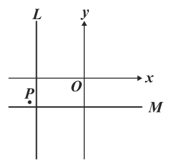
（A） a<−5，b>−3（B） a<−5，b<−3（C） a>−5，b>−3（D） a>−5，b<−3答案：（A）
詳解與考點 正解：題幹以直線 x=−5 與 y=−3 判讀 P 點位置，鉛直線看左右、水平線看上下。P 在 L 的左側，所以 a<−5；P 在 M 的上方，所以 b>−3，故 A 為正解。
B：b<−3 表示 P 在 M 的下方，與圖示位置不符。
C：a>−5 表示 P 在 L 的右側，與圖示位置不符。
D：a>−5、b<−3 同時把 P 相對 L、M 的位置判反，錯誤。
本題考點：座標平面的不等式判讀——在 x=k 左側表示 x<k、右側表示 x>k；在 y=k 上方表示 y>k、下方表示 y<k。
第 8 題
如圖（三），梯形 ABCD 中，\(\overline{AD}\parallel\overline{BC}\)。若 \(\angle ADC=140^\circ\)，且 \(\overline{BD}\perp\overline{CD}\)，則 \(\angle DBC\) 的度數為何？
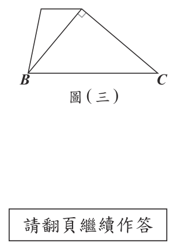
（A） 30（B） 40（C） 50（D） 60答案：（C）
詳解與考點 正解：題幹給 AD∥BC、∠ADC=140° 與 BD⊥CD；先用平行線同側內角求 ∠DCB，再用直角三角形內角和。因 AD∥BC，∠ADC+∠DCB=180°，故 ∠DCB=180°-140°=40°；又 BD⊥CD，∠BDC=90°。在△BDC 中，∠DBC=180°-90°-40°=50°，故 C 為正解。
A：30° 無法由正確步驟得出。若把 ∠DCB 誤算為 60°（180°-140° 減錯），再代直角三角形 90°-60°，才會得 30°；正確為 ∠DCB=40°、∠DBC=50°。
B：40° 是 ∠DCB 的度數（同側內角 180°-140°），並非題目所求的 ∠DBC；把中間結果當成答案即誤選 40°。
D：60° 同樣無法由正確條件推得。若把 ∠DCB 誤算為 30°，代 90°-30° 便得 60°；依正確值 180°-90°-40°=50°，故 60° 錯誤。
本題考點：平行線同側內角——AD∥BC 時 ∠ADC+∠DCB=180°，先算出 ∠DCB=40°；直角三角形內角和——∠DBC=180°-90°-∠DCB=50°，須分清 ∠DCB 與 ∠DBC 的位置，勿把中間量或誤算值當答案。
第 9 題
有多少個正整數是 \(18\) 的倍數，同時也是 \(216\) 的因數？
（A） \(2\)（B） \(6\)（C） \(10\)（D） \(12\)答案：（B）
詳解與考點 正解：題幹同時要求是 18 的倍數與 216 的因數，先用質因數分解限定指數範圍。18=2×3²，216=2³×3³。設 n=2^a×3^b；因 n 是 18 的倍數，a 至少為 1、b 至少為 2；因 n 是 216 的因數，a 至多為 3、b 至多為 3。因此 a 可取 1、2、3，共 3 種，b 可取 2、3，共 2 種，總數為 3×2=6，故 B 為正解。
A：只計 b 可取 2、3 的 2 種，漏掉 a 的 3 種選擇，才會誤得 2。
C：若把 a 錯列為 0、1、2、3、4 共 5 種，再乘以 b 的 2 種，會誤得 5×2=10；其中 a=0 不符合 18 的倍數條件，a=4 又不符合 216 的因數條件。
D：若只算 216 以內共有 216÷18=12 個 18 的倍數，會誤得 12；但其中如 90 並不是 216 的因數，不能全數計入。
本題考點：因數與倍數的質因數分解——倍數條件給各質因數指數下限，因數條件給上限；組合計數——各質因數可取指數種類相乘。
第 10 題
利用公式解可得一元二次方程式 \(3x^2 - 11x - 1 = 0\) 的兩解為 \(a\)、\(b\)，且 \(a > b\)，求 \(a\) 值為何？
（A） \(\dfrac{-11 + \sqrt{109}}{6}\)（B） \(\dfrac{-11 + \sqrt{133}}{6}\)（C） \(\dfrac{11 + \sqrt{109}}{6}\)（D） \(\dfrac{11 + \sqrt{133}}{6}\)答案：（D）
詳解與考點 正解：題幹指定用公式解，先辨識係數並計算判別式。3x²-11x-1=0 中，A=3、B=-11、C=-1。B²-4AC=(-11)²-4×3×(-1)=121+12=133。x=[-B±√(B²-4AC)]/(2A)=[11±√133]/6；較大根取加號，a=(11+√133)/6，D 為正解。
A：分子應為 -B=11，且根號內應為 133，錯誤。
B：把 -B 誤寫成 -11；由 B=-11 可得 -B=11，錯誤。
C：109 是把 -4AC 的正值誤作相減，錯誤。它看起來對，是因為容易忽略 C=-1 使 4AC 為負。
本題考點：一元二次方程式公式解——x=[-B±√(B²-4AC)]/(2A)；代入前連同係數正負號寫清楚，再以加號選較大根。
第 11 題
業者販售含咖啡因飲料時通常會以紅、黃、綠三色來標示每杯飲料的咖啡因含量，各顏色的意義如表（一）所示。我國建議每位成人一日的咖啡因攝取量不超過 300 毫克，歐盟則建議一日不超過 400 毫克。表（二）為某商店美式咖啡的容量及咖啡因含量標示，已知該店美式咖啡每毫升的咖啡因含量相同，判斷一位成人一日喝 2 杯該店中杯的美式咖啡，其咖啡因攝取量是否符合我國或歐盟的建議？
表（一）咖啡因含量標示對照；表（二）某商店美式咖啡標示 表 咖啡因含量標示／容量 咖啡因含量／咖啡因含量標示 表（一） 紅色 超過 200 毫克 表（一） 黃色 超過 100 毫克，但不超過 200 毫克 表（一） 綠色 不超過 100 毫克 表（二）中杯 360 毫升 黃色 表（二）大杯 480 毫升 紅色
（A） 符合我國也符合歐盟（B） 不符合我國也不符合歐盟（C） 符合我國，不符合歐盟（D） 不符合我國，符合歐盟答案：（D）
詳解與考點 正解：表（二）的中杯為黃色、大杯為紅色，且每毫升含量相同，須同時利用兩項範圍。設每毫升含 r 毫克。中杯黃色：100<360r≤200；大杯紅色：480r>200，所以 r>200/480=5/12。2 杯中杯含量=2×360r=720r。由 r>5/12，720r>720×5/12=300；由 360r≤200，720r≤400。因此攝取量超過 300 毫克、但不超過 400 毫克，故不符合我國建議、符合歐盟建議，D 為正解。
A：忽略大杯紅色所給的下限，誤判 2 杯中杯可不超過 300 毫克，錯誤。
B：忽略中杯黃色的上限 360r≤200，誤判必超過 400 毫克，錯誤。
C：與 720r>300 的結果相反，錯誤。
本題考點：比例範圍——將同一單位量設為 r，分別由表格轉成不等式；倍數後不等式兩端同步乘同一正數，再與門檻比較。
第 12 題
盒玩的販售方式是將一款玩具裝在盒子中販賣，購買者只能從外盒知道購買的是哪一系列玩具，但無法知道是系列中的哪一款。圖（四）、圖（五）分別為動物系列、汽車系列盒玩中所有可能出現的款式，其中圖（四）動物系列有 A 款、B 款、C 款、D 款、E 款、F 款共 6 款，圖（五）汽車系列有 A 款、B 款、C 款、D 款、E 款共 5 款。已知小友喜歡圖（四）中的 A 款、C 款，喜歡圖（五）中的 B 款，若他打算購買圖（四）的盒玩一盒，且他買到圖（四）中每款玩具的機會相等；他也打算購買圖（五）的盒玩一盒，且他買到圖（五）中每款玩具的機會相等，則他買到的兩盒盒玩內的玩具都是他喜歡的款式的機率為何？
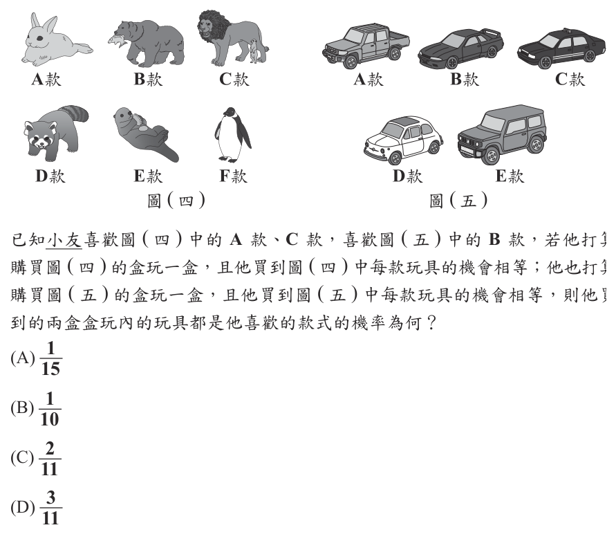
（A） \(\dfrac{1}{15}\)（B） \(\dfrac{1}{10}\)（C） \(\dfrac{2}{15}\)（D） \(\dfrac{3}{11}\)答案：（A）
詳解與考點 正解：兩盒分屬不同系列，且各款機會相等，兩個「買到喜歡款」的事件相乘。動物系列喜歡 A、C 共 2 款，機率=2/6；汽車系列只喜歡 B 共 1 款，機率=1/5。兩盒皆喜歡的機率=2/6×1/5=2/30=1/15，A 為正解。
B：1/10 未以動物系列 6 款與汽車系列 5 款分別作分母相乘，錯誤。
C：2/15 未將 2/6×1/5 正確約分，錯誤。
D：3/11 是把兩系列的喜歡款數或總款數相加，非獨立事件相乘，錯誤。
本題考點：獨立事件機率——每一事件先以「喜歡款數／該系列總款數」求機率；兩事件同時發生時相乘。
第 13 題
如圖（六），直角柱 ABCDEF 的底面為直角三角形。若 \(\angle ABC = \angle DEF = 90^\circ\)，\(\overline{BC} > \overline{AB} > \overline{BE}\)，則連接 \(\overline{AE}\) 後，下列敘述何者正確？
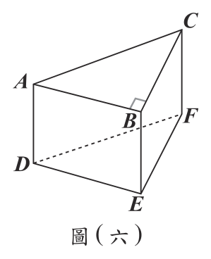
（A） \(\angle ACB < \angle FDE\)，\(\angle AEB > \angle ACB\)（B） \(\angle ACB < \angle FDE\)，\(\angle AEB < \angle ACB\)（C） \(\angle ACB > \angle FDE\)，\(\angle AEB > \angle ACB\)（D） \(\angle ACB > \angle FDE\)，\(\angle AEB < \angle ACB\)答案：（A）
詳解與考點 正解：題幹給 BC>AB>BE，可用兩個直角三角形的正切比角大小。在 △ABE，tan∠AEB=AB/BE；在 △ABC，tan∠ACB=AB/BC。因 BC>BE，所以 AB/BE>AB/BC，故 ∠AEB>∠ACB。又 tan∠ACB=AB/BC<1，而 tan∠FDE=BC/AB>1，故 ∠ACB<∠FDE。因此 A 為正解。
B：把 AB/BE 與 AB/BC 的分母大小造成的比值方向比反，錯誤。
C：把 BC>AB 誤判為 AB/BC>BC/AB，錯誤。
D：兩個角度關係都與正切比值相反，錯誤。
本題考點：直角三角形比角——銳角範圍內正切值較大則角較大；分子固定時，分母較小的分數較大。
第 14 題
坐標平面上有兩個二次函數的圖形，其頂點 \(P\)、\(Q\) 皆在 \(x\) 軸上，且有一水平線與兩圖形相交於 \(A\)、\(B\)、\(C\)、\(D\) 四點，各點位置如圖（七）所示。若 \(\overline{AB}=10\)，\(\overline{BC}=5\)，\(\overline{CD}=6\)，則 \(\overline{PQ}\) 的長度為何？
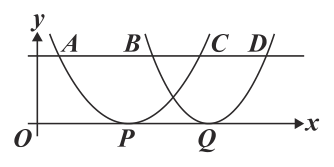
（A） 7（B） 8（C） 9（D） 10答案：（B）
詳解與考點 正解：兩個二次函數都與同一水平線相交，頂點在 x 軸上；每條拋物線的對稱軸會通過該拋物線兩個交點的中點，因此先找出各自的交點配對。設 A=0，則 B=0+10=10，C=10+5=15，D=15+6=21。左拋物線交於 A、C，所以 P 的位置＝(0+15)÷2=7.5；右拋物線交於 B、D，所以 Q 的位置＝(10+21)÷2=15.5。PQ=15.5−7.5=8，故 B 為正解。
A：若 PQ=7，由 P=7.5 會算得 Q=7.5+7=14.5；但 Q 必須是 B、D 的中點，正確位置為 (10+21)÷2=15.5，少算了 1。
C：若 PQ=9，由 P=7.5 會算得 Q=7.5+9=16.5；這比正確中點 15.5 多 1，未正確計算 (10+21)÷2。
D：若 PQ=10，由 P=7.5 會算得 Q=17.5，不是 B、D 的中點 15.5；10 只是 AB 的長度，不能直接當作 PQ。
本題考點：二次函數對稱性——拋物線的對稱軸通過兩個同高交點的中點；圖形判讀——先配對 A、C 與 B、D，再由 15.5−7.5=8 求兩頂點距離。
第 15 題
若想在等差數列 \(1, 2, 3, 4, 5\) 中插入一些數，使得新的數列也是等差數列，且新的數列的首項仍是 \(1\)，末項仍是 \(5\)，則新的數列的項數可能為下列何者？
（A） \(11\)（B） \(15\)（C） \(30\)（D） \(33\)答案：（D）
詳解與考點 正解：插入後原來的 1、2、3、4、5 都仍須是新等差數列的項，所以新公差必須整除相鄰整數差 1。首末差=5-1=4。若新數列有 n 項，公差 d=4/(n-1)。由 1=k×d，得 1=k×4/(n-1)，所以 n-1=4k，即 n-1 必為 4 的倍數。D 的 33-1=32=4×8，故可能，D 為正解。
A：11-1=10，不是 4 的倍數，錯誤。
B：15-1=14，不是 4 的倍數，錯誤。
C：30-1=29，不是 4 的倍數，錯誤。
本題考點：等差數列插項——先用 d=（末項-首項）/（項數-1）求新公差；原數列相鄰差須是 d 的整數倍，據此檢驗項數。
第 16 題
已知某速食店販售的套餐內容為一片雞排和一杯可樂，且一份套餐的價錢比單點一片雞排再單點一杯可樂的總價錢便宜 40 元。阿俊打算到該速食店買兩份套餐，若他發現店內有單點一片雞排就再送一片雞排的促銷活動，且單點一片雞排再單點兩杯可樂的總價錢，比兩份套餐的總價錢便宜 10 元，則根據題意可得到下列哪一個結論？
（A） 一份套餐的價錢必為 140 元（B） 一份套餐的價錢必為 120 元（C） 單點一片雞排的價錢必為 90 元（D） 單點一片雞排的價錢必為 70 元答案：（C）
詳解與考點 正解：題幹同時給出套餐折扣與促銷後總價的關係，要用二元一次方程式聯立消元。設單點一片雞排為 C 元、單點一杯可樂為 K 元、1 份套餐為 S 元。套餐比單點雞排加可樂便宜 40 元，所以 S=C+K−40。促銷時買 1 片雞排送 1 片，共有 2 片雞排，再買 2 杯可樂，總價為 C+2K；它比 2 份套餐便宜 10 元，所以 C+2K=2S−10。代入 S：C+2K=2(C+K−40)−10=2C+2K−80−10=2C+2K−90。兩邊減去 C+2K，得 0=C−90，因此 C=90。單點一片雞排必為 90 元，C 為正解。
A：140 元是套餐價 S 的一種猜測，但由 S=C+K−40=90+K−40=K+50 可知 K 未知，S 不能唯一確定為 140 元，錯誤。
B：120 元同樣是對套餐價 S 的猜測；S=K+50，沒有可樂價格 K 就無法算出 S 必為 120 元，錯誤。
D：若雞排 C=70，代入 0=C−90 會得到 0=−20，與題意聯立結果矛盾，錯誤。
本題考點：二元一次方程式聯立——先把每句價格關係設成方程式，再代入消去共同未知數；促銷總價判讀——「買 1 送 1」表示付 1 片的價格、取得 2 片商品；可否唯一求值——消元後只得到 C=90，而 S 仍隨 K 改變。
第 17 題
圖（八）的方格紙中，每個方格的邊長為 1，A、O 兩點皆在格線的交點上。今在此方格紙格線的交點上另外找兩點 B、C，使得 \(\triangle ABC\) 的外心為 O，求 \(\overline{BC}\) 的長度為何？
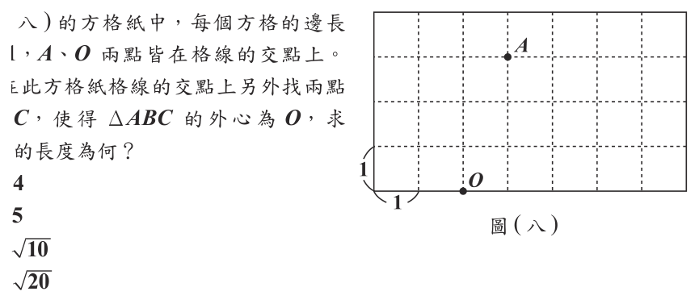
（A） 4（B） 5（C） \(\sqrt{10}\)（D） \(\sqrt{20}\)答案：（D）
詳解與考點 正解：外心 O 到三頂點等距，先由方格求外接圓半徑，再算弦長。A 相對 O 為右 1 格、上 3 格，OA²=1²+3²=10，因此半徑為 √10。圓上的格點可為（±1、±3）、（±3、±1）；取 B（-3、1）、C（-1、-3），則 BC²=[-1-(-3)]²+(-3-1)²=2²+(-4)²=4+16=20，BC=√20，D 為正解。
A：4 是部分格點間的水平或垂直距離，不是所取 B、C 的距離，錯誤。
B：5 不符合 BC²=20 的結果，錯誤。
C：√10 把 O 到圓周的半徑誤當成弦 BC，錯誤。
本題考點：外心——外心到三頂點距離相等；方格座標距離平方=橫坐標差²+縱坐標差²，最後再開平方。
第 18 題
樂樂停車場為 24 小時營業，其收費方式如表（三）所示。已知阿虹某日 10:00 進場停車，停了 \(x\) 小時後離場，\(x\) 為整數。若阿虹離場的時間介於當日的 20:00～24:00 間，則他此次停車的費用為多少元？
表（三） 停車時段 收費方式 08:00～20:00 20元/小時，該時段最多收100元 20:00～08:00 5元/小時，該時段最多收30元 若進場與離場時間不在同一時段，則兩時段分別計費
（A） \(5x+30\)（B） \(5x+50\)（C） \(5x+150\)（D） \(5x+200\)答案：（B）
詳解與考點 正解：離場在 20:00～24:00，10:00 進場後 x 為 10～14 的整數；應分時段計費。08:00～20:00 停 10 小時，費用=10×20=200 元，但該時段最多收 100 元，所以日間收 100 元。夜間停 x-10 小時，費用=5(x-10)；因 x-10≤4，夜間費用不超過 20 元，未達 30 元上限。總費用=100+5(x-10)=100+5x-50=5x+50，B 為正解。
A：常數項 30 未計入日間最高收費 100 元，錯誤。
C：把日間 10 小時以原價 200 元計入，未套用上限，錯誤。
D：日間費用重複計算或常數項合併錯誤，錯誤。
本題考點：分段計費——先依時間切分各時段，分別以「時數×單價」計算並套用各段上限，最後再相加化簡。
第 19 題
圖（九）為一圓形紙片，\(A\)、\(B\)、\(C\) 為圓周上三點，其中 \(\overline{AC}\) 為直徑。今以 \(\overline{AB}\) 為摺線將紙片向右摺後，紙片蓋住部分的 \(\overline{AC}\)，而 \(\overline{AB}\) 上與 \(\overline{AC}\) 重疊的點為 \(D\)，如圖（十）所示。若 \(\overparen{BC}=35^\circ\)，則 \(\overparen{AD}\) 的度數為何？
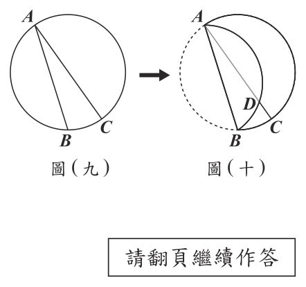
（A） 105（B） 110（C） 120（D） 145答案：（B）
詳解與考點 正解：AC 是直徑，所以半圓弧 ABC=180°。已知弧 BC=35°，先算弧 AB=180°-35°=145°。沿 AB 摺疊後，C 對稱到 AC 上的 D，弧 BC 對應弧 BD，因此弧 BD=35°。弧 AD=弧 AB-弧 BD=145°-35°=110°，B 為正解。
A：105 是把 35°重複扣除或半圓弧拆分錯誤，錯誤。
C：120 未依摺疊對應得到弧 BD=35°，錯誤。
D：145 只求出弧 AB，尚未扣除弧 BD，錯誤。
本題考點：圓弧與摺紙對稱——直徑所對半圓弧為 180°；摺線對稱保留對應弧的度數，再以弧的加減求未知弧。
第 20 題
如圖（十一），\( \triangle ABC \) 中，\( D \) 點在 \( \overline{BC} \) 上，且 \( \overline{BD} \) 的中垂線與 \( \overline{AB} \) 相交於 \( E \) 點，\( \overline{CD} \) 的中垂線與 \( \overline{AC} \) 相交於 \( F \) 點。已知 \( \triangle ABC \) 的三個內角皆不相等，根據圖（十一）中標示的角，判斷下列敘述何者正確？
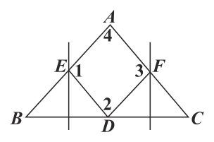
（A） \( \angle 1 = \angle 3 \)，\( \angle 2 = \angle 4 \)（B） \( \angle 1 = \angle 3 \)，\( \angle 2 \neq \angle 4 \)（C） \( \angle 1 \neq \angle 3 \)，\( \angle 2 = \angle 4 \)（D） \( \angle 1 \neq \angle 3 \)，\( \angle 2 \neq \angle 4 \)答案：（C）
詳解與考點 正解：中垂線上的點到線段兩端等距，可先造出兩個等腰三角形。E 在 BD 的中垂線上，所以 EB=ED，△EBD 為等腰三角形，∠EDB=∠B。F 在 CD 的中垂線上，所以 FD=FC，△FDC 為等腰三角形，∠FDC=∠C。∠2=180°-∠EDB-∠FDC=180°-∠B-∠C=∠A=∠4，因此 ∠2=∠4。∠1=∠3 須有 ∠B=∠C，但三內角皆不相等，故 ∠1≠∠3，C 為正解。
A：誤以為兩組角都必相等；∠1、∠3 是否相等取決於 ∠B、∠C，錯誤。
B：漏掉 ∠2=180°-∠B-∠C=∠A=∠4 的必然關係，錯誤。
D：同樣漏掉 ∠2=∠4，錯誤。
本題考點：中垂線性質——在線段中垂線上的點到兩端等距，形成等腰三角形；再以三角形內角和 180° 推導角的相等或不等。
第 21 題
有一東西向的直線吊橋橫跨溪谷，小維、阿良分別從西橋頭、東橋頭同時開始往吊橋的另一頭筆直地走過去，如圖（十二）所示。已知小維從西橋頭走了 84 步，阿良從東橋頭走了 60 步時，兩人在吊橋上的某點交會，且交會之後阿良再走 70 步恰好走到西橋頭。若小維每步的距離相等，阿良每步的距離相等，則交會之後小維再走多少步會恰好走到東橋頭？
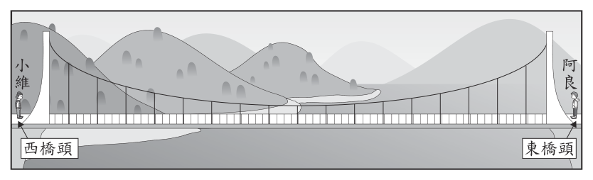
（A） 46（B） 50（C） 60（D） 72答案：（D）
詳解與考點 正解：相遇後阿良走的 70 步距離，正是小維相遇前走的 84 步距離，先由此求步距比。設小維每步 a、阿良每步 b，84a=70b，所以 a/b=70/84=5/6。相遇後小維要走的路程，等於阿良相遇前的 60 步路程，即 60b。所需步數=60b÷a=60b÷(5b/6)=60×6/5=72，D 為正解。
A：46 不符合 60b÷(5b/6)的計算結果，錯誤。
B：50 未依步距比換算，錯誤。
C：60 直接把阿良的步數當成小維的步數，忽略兩人的步距不同，錯誤。
本題考點：路程與步距——同一路程可列「步數×步距」相等式；換算另一人的步數時，以路程除以該人的步距。
第 22 題
如圖（十三），正方形 \(ABCD\) 與 \(\triangle EBC\) 中，\(\overline{AD}\) 分別與 \(\overline{EB}\)、\(\overline{EC}\) 相交於 \(F\) 點、\(G\) 點。若 \(\triangle EBG\) 的面積為 6，正方形 \(ABCD\) 的面積為 16，則 \(\overline{FG}\) 與 \(\overline{BC}\) 的長度比為何？
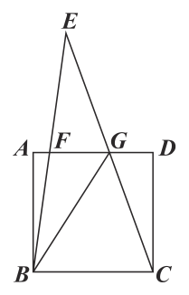
（A） \(3:5\)（B） \(3:6\)（C） \(3:7\)（D） \(3:8\)答案：（C）
詳解與考點 正解：題幹給正方形面積與 △EBG 面積，且 AD∥BC，應用相似三角形與面積關係。正方形面積為 16，所以邊長 BC=√16=4。設 E 到 BC 的距離為 h，則 △EBC 面積=1/2×BC×h=1/2×4×h=2h。△EBG 與 △EBC 以 B 為頂點、底邊分別在 EC 上，面積比 EG:EC=(h−4):h；因此 6=(h−4)/h×2h=2(h−4)，6=2h−8，2h=14，h=7。又 △EFG∼△EBC，相似比 FG:BC=(h−4):h=(7−4):7=3:7，所以 FG:BC=3:7，故 C 為正解。
A：3:5 是把 h 誤作 5，或未依 6=2(h−4) 算出 h=7，錯誤。
B：3:6 把底邊比的分母誤取為 6，6 是 △EBG 的面積，不是 E 到 BC 的距離，錯誤。
D：3:8 是把 h 或正方形邊長代錯；由 h=7 可得分母必為 7，錯誤。
本題考點：正方形邊長——面積為 16 時邊長為 √16=4；相似三角形——平行線截出的 △EFG 與 △EBC 對應邊成比例；面積關係——先由 6=2(h−4) 求 h=7，再得 FG:BC=3:7。
第 23 題
如圖 ( 十四 )，矩形 ABCD 中， AB = 6，AD = 8，且有一點 P 從 B 點沿著 BD 往 D 點移動。若過 P 點作 AB 的垂線交 AB 於 E 點，過 P 點作 AD 的垂線交 AD 於 F 點，則 EF 的長度最小為多少？
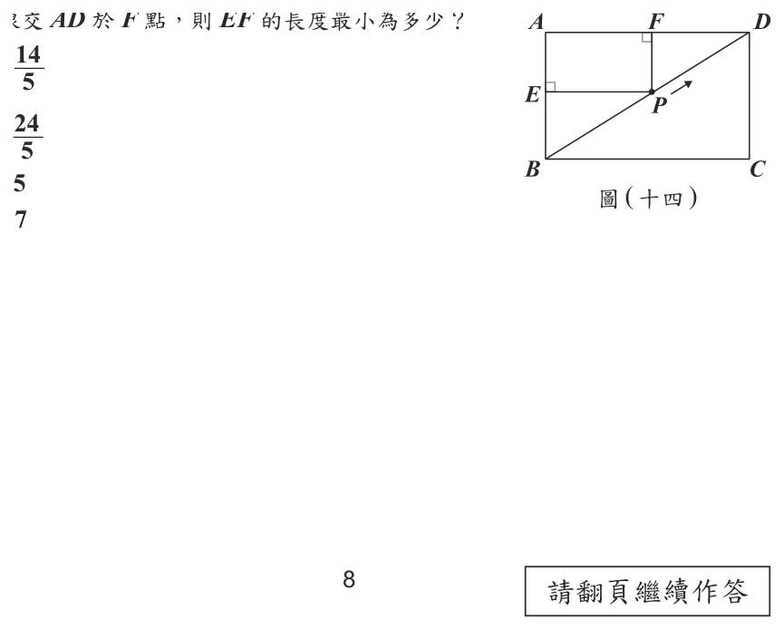
（A） \(\dfrac{14}{5}\)（B） \(\dfrac{24}{5}\)（C） \(5\)（D） \(7\)答案：（B）
詳解與考點 正解：P 在對角線 BD 上，EF 為矩形 AEPF 的對角線，所以 EF=AP；要使 EF 最小，就是求 A 到直線 BD 的最短距離。先算 BD=√(6²+8²)=√(36+64)=√100=10。△ABD 面積=6×8÷2=24，也可寫成 BD×高÷2=10×高÷2=5高。令兩式相等：24=5高，高=24/5，因此 EF 最小為 24/5，B 為正解。
A：14/5 是面積或高的計算錯誤，錯誤。
C：5 是把對角線中點相關長度誤作垂直最短距離，錯誤。
D：7 不符合由 24=5高 求得的高，錯誤。
本題考點：點到直線最短距離——垂線段最短；同一三角形面積可用「底×高÷2」列式，先由畢氏定理求底，再解出高。
依國際常用定義，一個國家中的 65 歲以上人口占總人口的百分比為 7% 以上（含）且未達 14% 時稱作「高齡化社會」，14% 以上（含）且未達 20% 時稱作「高齡社會」，20% 以上（含）時稱作「超高齡社會」。
第 24 題
圖 ( 十五 ) 為某機構於 2020 年繪製的四個國家 65 歲以上人口占總人口百分比之折線圖，其中 2020 年之後的數值為推估值。根據圖 ( 十五 ) 推測，下列哪一個國家從進入「高齡社會」到進入「超高齡圖 ( 十五 ) 社會」所花的時間最短？
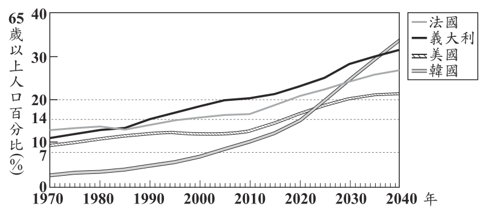
（A） 法國（B） 義大利（C） 美國（D） 韓國答案：（D）
詳解與考點 正解：題幹比較各國從進入高齡社會到進入超高齡社會所花時間，應量出折線跨過14%與20%兩條水平線的年份差。韓國約在2018年跨過14%，約在2025年跨過20%，時間差＝2025−2018=7年；四國中這段水平距離最短，因此D為正解。
A：法國從14%到20%的兩個交點年份相距較遠，所花時間超過韓國，錯誤。
B：義大利雖整體65歲以上人口占比較高，但很早跨過14%，到20%歷時較長。它看起來對，是因為其曲線位置高，題幹比較的卻是兩門檻間的年數，錯誤。
C：美國跨過14%與20%的年份差也大於韓國，錯誤。
本題考點：人口老化分級——65歲以上人口占比達14%為高齡社會、達20%為超高齡社會；折線圖判讀——分別找出跨越14%與20%的年份，再以終點年份減起點年份比較所花時間。
依國際常用定義，一個國家中的 65 歲以上人口占總人口的百分比為 7% 以上（含）且未達 14% 時稱作「高齡化社會」，14% 以上（含）且未達 20% 時稱作「高齡社會」，20% 以上（含）時稱作「超高齡社會」。
第 25 題
已知 2019 年我國進入「高齡社會」，預測 2025 年會進入「超高齡社會」。假設我國 2019 年與 2025 年總人口數皆為 2300 萬人，且 2019 年我國 65 歲以上人口占總人口的百分比恰好達到「高齡社會」的最低標準，則根據上述預測，關於我國 65 歲以上人口數，2025 年與 2019 年相比至少增加了多少萬人？
（A） 138（B） 161（C） 322（D） 460答案：（A）
詳解與考點 正解：題幹問「至少增加」且給定2019年恰達高齡社會最低標準、2025年進入超高齡社會，應以兩個門檻的最小值計算。2019年65歲以上人口＝2300×14％＝322萬人。2025年至少為＝2300×20％＝460萬人。增加人數＝460-322=138萬人，故A為正解。
B：161萬人不是20％與14％兩個門檻所算人口的差值，錯誤。
C：322萬人是2019年65歲以上人口數，不是增加量，錯誤。
D：460萬人是2025年剛達門檻的人口數，不是兩年相差的人數，錯誤。
本題考點：百分率——部分量＝總量×百分率；門檻問題——「至少」先取剛好達標的最小百分率，再以後期人口數減前期人口數。
第 26 題
A、B 兩廠牌的疫苗各自進行實驗，兩廠牌的實驗人數皆為 30000 人，各廠牌實驗人數中一半的人施打疫苗，另一半的人施打不具疫苗成分的安慰劑。經過一段時間後觀察得知，在 A 廠牌的實驗中，施打疫苗後仍感染的人數為 50 人，施打安慰劑後感染的人數為 500 人。而疫苗效力的算式如下：
\( \text{疫苗效力} = (1 - p \div q) \times 100\% \)，其中
\( p = \dfrac{\text{施打疫苗後仍感染的人數}}{\text{施打疫苗的人數}} \)，\( q = \dfrac{\text{施打安慰劑後感染的人數}}{\text{施打安慰劑的人數}} \)。
請根據上述資訊回答下列問題，完整寫出你的解題過程並詳細解釋：
(1) 根據實驗數據算出 A 廠牌的疫苗效力為多少？
(2) 若 B 廠牌的實驗數據算出的疫苗效力高於 A 廠牌，請詳細說明 B 廠牌的實驗中施打疫苗後仍感染的人數，是否一定低於 A 廠牌實驗中施打疫苗後仍感染的人數？
標準答案未收錄
詳解與考點 考點：把文字情境轉成公式代入，並用「反例」判斷命題是否必然成立。
題目給定：兩廠牌各取 30000 人，其中一半（15000 人）施打疫苗，另一半（15000 人）施打安慰劑。疫苗效力 =(1 − p ÷ q)× 100%，p =（施打疫苗後仍感染人數）÷（施打疫苗人數），q =（施打安慰劑後感染人數）÷（施打安慰劑人數）。
(1) A 廠牌：施打疫苗者 15000 人、感染 50 人，安慰劑者 15000 人、感染 500 人。
p = 50 ÷ 15000 = 1/300，q = 500 ÷ 15000 = 1/30。
p ÷ q =(1/300)÷(1/30)= 30/300 = 1/10。
疫苗效力 =(1 − 1/10)× 100% = 90%。
A 廠牌的疫苗效力為 90%。
(2) 不一定。B 廠牌效力高於 90%，表示 p ÷ q < 1/10，即「B 施打疫苗後感染人數 < B 施打安慰劑後感染人數 ÷ 10」。由於 B 的安慰劑感染人數未必是 500，可能更多。
舉反例：設 B 安慰劑感染 1000 人、疫苗感染 90 人，則 p ÷ q = 90 ÷ 1000 = 0.09，效力 =(1 − 0.09)× 100% = 91% > 90%，但 90 人 > 50 人。
故 B 廠牌施打疫苗後仍感染的人數，不一定低於 A 廠牌的 50 人。
第 27 題
2. 邊長6 公分的正八邊形，如圖( 十七) 所示。圖( 十六) 圖( 十七) 請根據上述資訊回答下列問題，完整寫出你的解題過程並詳細解釋： (1) 圖( 十七) 的正八邊形的一個內角度數為多少？ (2) 已知有一個圓柱形花瓶其底面半徑為 8 公分，假設不考慮花瓶與環套厚度，判斷圖( 十六) 的環套是否能在不變形的前提下，套在此圓柱形花瓶側面外圍？圖(十八)呈現 45° − 45° − 90° 的三角形與 22.5° − 67.5° − 90° 的三角形，當斜邊為 1 時的兩股近似值，供作答時參考。圖( 十八)
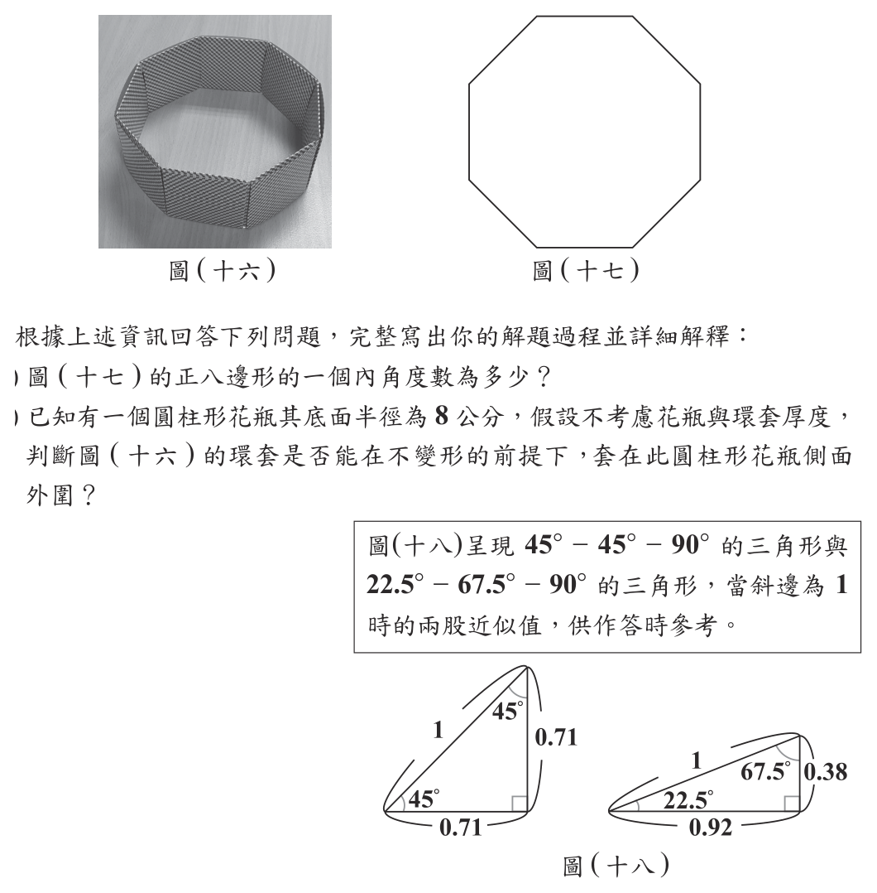
本題選項為上圖中的 A／B／C／D，請對照圖片作答。
標準答案未收錄
詳解與考點 (1) 正八邊形可分割成(8−2)＝6 個三角形，內角和為 6×180°＝1080°，每個內角相等，故一個內角為 1080°÷8=135°。
(2) 環套上視圖是邊長 6 的正八邊形，要套在底面半徑 8 公分的圓柱外圍，等於要讓半徑 8 的圓整個塞進正八邊形內。圓會不會凸出，取決於各邊到中心的最短距離，即內切圓（邊心距）半徑 a，而非外接圓半徑。將中心與相鄰兩頂點相連得等腰三角形，圓心角 360°÷8=45°，作邊上的高分成兩個直角三角形：22.5° 的對邊為半邊長 3，邊心距 a 為 67.5° 的對邊。對照圖十八斜邊為 1 的 22.5°−67.5°−90° 三角形（0.38 對 22.5°、0.92 對 67.5°），由 a÷3=0.92÷0.38 得 a≈7.26 公分。因為內切圓半徑約 7.26 公分＜花瓶半徑 8 公分，圓會由各邊凸出，故在不變形下環套無法套住此花瓶。答：（1）135°；（2）不能套入。
其他年度
回到國中教育會考數學的年度總覽 ，
或到國中教育會考題庫首頁 看其他科目。
題目與標準答案出自心測中心 會考歷屆試題（依著作權法 §9，考試試題不受著作權保護）。依中華民國《著作權法》第 9 條第 1 項第 5 款，
依法令舉行之各類考試試題不得為著作權之標的，得自由利用。詳解為 AI 整理的學習輔助，
並非官方標準答案 ；中華民國會修訂，引用前請對照現行版本查證。